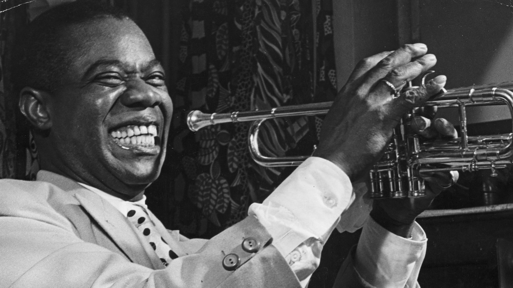
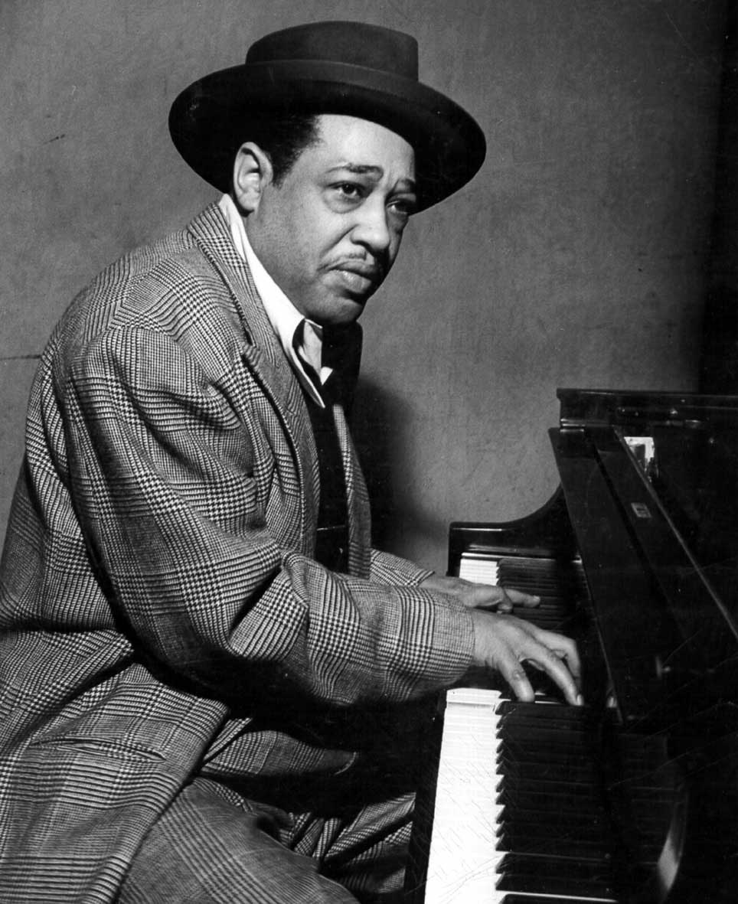
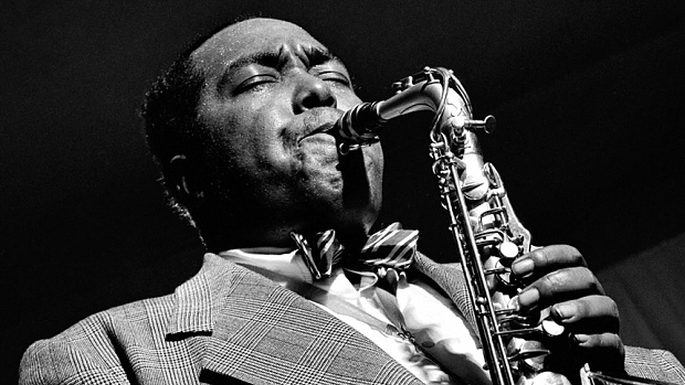
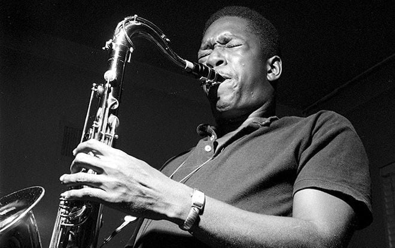
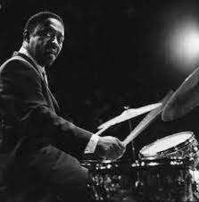
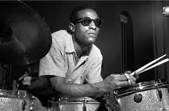
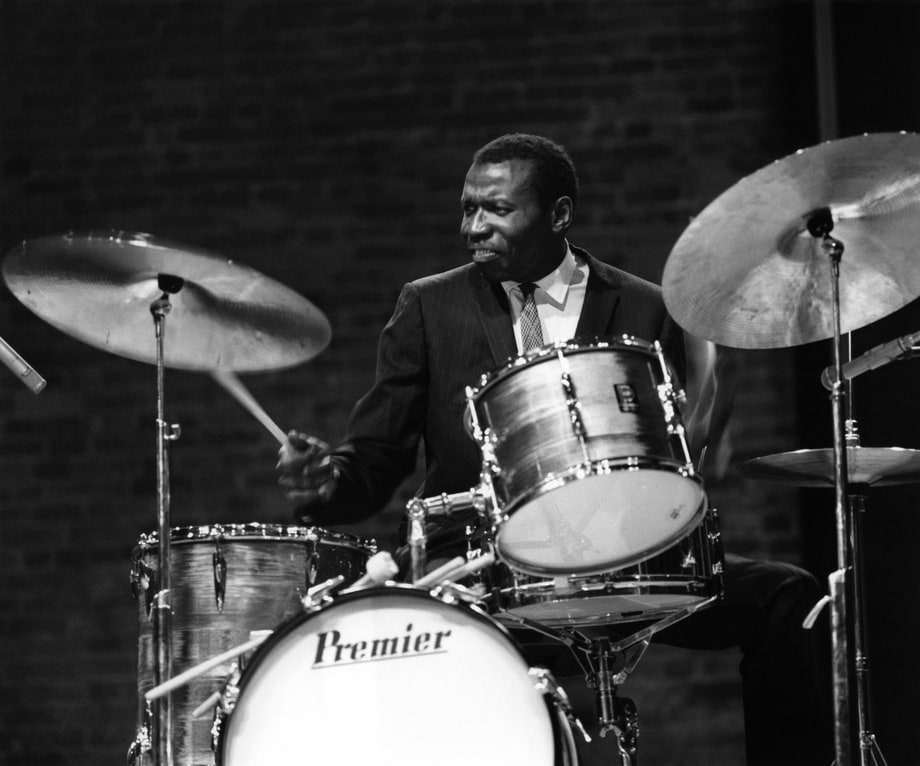

-
Louis Armstrong
Louis Armstrong, nacido el 4 de agosto de 1901 en Nueva Orleans, fue un músico estadounidense de jazz y una de las figuras más influyentes en la historia de la música. Creció en un entorno pobre y comenzó su carrera musical tocando el cornet en las calles de Nueva Orleans. Se convirtió en un virtuoso del cornet y la trompeta, destacando por su habilidad para improvisar y su distintiva voz. Grabó numerosos éxitos, incluyendo "What a Wonderful World" y "Hello, Dolly!". Fue un defensor de los derechos civiles y dejó un legado perdurable en el mundo del jazz. Falleció el 6 de julio de 1971 en Nueva York.
-

Miles Davis, nacido el 26 de mayo de 1926 en Illinois, fue un influyente músico estadounidense de jazz, trompetista y compositor. Es considerado uno de los artistas más importantes en la historia del jazz, conocido por su innovación y experimentación con diferentes estilos musicales. Davis fue pionero en el jazz modal y fusionó el jazz con otros géneros como el rock y el funk. Grabó álbumes icónicos como "Kind of Blue" y "Bitches Brew". Su legado perdura como una figura destacada en la evolución del jazz moderno. Miles Davis falleció el 28 de septiembre de 1991 en California.
-

Duke Ellington, nacido el 29 de abril de 1899 en Washington D.C., fue un destacado compositor, pianista y líder de orquesta estadounidense, reconocido como una figura central en la historia del jazz y la música del siglo XX. Ellington fue un innovador en la composición y arreglos musicales, y su banda, la "Duke Ellington Orchestra", se convirtió en una de las más influyentes en la historia del jazz. Es conocido por composiciones emblemáticas como "Take the A Train" y "Mood Indigo". Su legado perdura como uno de los grandes nombres del jazz y la música estadounidense. Duke Ellington falleció el 24 de mayo de 1974 en Nueva York.
-

Charlie Parker, nacido el 29 de agosto de 1920 en Kansas City, Misuri, fue un saxofonista y compositor estadounidense conocido como uno de los músicos más influyentes en la historia del jazz. Apodado "Bird", Parker fue un pionero en el desarrollo del bebop, un estilo de jazz caracterizado por ritmos rápidos y complejos, improvisación virtuosa y armonías avanzadas. Sus grabaciones, como "Yardbird Suite" y "Confirmation", son consideradas clásicos del jazz. A pesar de su corta vida y luchas personales, su impacto en la música perdura como una inspiración para generaciones de músicos de jazz. Charlie Parker falleció el 12 de marzo de 1955 en Nueva York.
-

John Coltrane, nacido el 23 de septiembre de 1926 en Carolina del Norte, fue un saxofonista y compositor estadounidense considerado uno de los músicos más influyentes en la historia del jazz. Coltrane es reconocido por su innovadora exploración musical y su estilo distintivo, caracterizado por su técnica virtuosa, su búsqueda espiritual y su capacidad para expandir los límites del jazz. Es conocido por álbumes emblemáticos como "Giant Steps" y "A Love Supreme". Su música sigue siendo una inspiración para músicos de jazz y aficionados en todo el mundo. John Coltrane falleció el 17 de julio de 1967 en Long Island, Nueva York.
-

Art Blakey, nacido el 11 de octubre de 1919 en Pittsburgh, Pensilvania, fue un destacado baterista y líder de banda de jazz. Es conocido por fundar y liderar el grupo "Art Blakey and the Jazz Messengers", uno de los conjuntos más influyentes en la historia del jazz. Blakey era conocido por su estilo de batería poderoso y enérgico, así como por su mentoría a jóvenes músicos. Su contribución al jazz como líder de banda y su influencia en generaciones de músicos lo convierten en una figura legendaria en el mundo del jazz. Art Blakey falleció el 16 de octubre de 1990 en Nueva York.
-

Max Roach, nacido el 10 de enero de 1924 en Carolina del Norte, fue un influyente baterista y compositor de jazz. Reconocido por su virtuosismo y su contribución al desarrollo del bebop y otros estilos de jazz moderno, Roach dejó una marca indeleble en la historia del jazz. Trabajó con destacados músicos como Charlie Parker, Dizzy Gillespie y Thelonious Monk. Su habilidad técnica, innovación rítmica y compromiso con la justicia social lo convirtieron en una figura emblemática en el mundo del jazz. Max Roach falleció el 16 de agosto de 2007 en Nueva York, dejando un legado perdurable en la música.
-

Elvin Jones, nacido el 9 de septiembre de 1927 en Míchigan, fue un influyente baterista de jazz conocido por su estilo distintivo y enérgico. Es reconocido principalmente por su asociación con el saxofonista John Coltrane, siendo el baterista principal del "John Coltrane Quartet" durante muchos años. Jones fue un innovador en la batería, utilizando ritmos complejos y polirrítmicos que agregaron profundidad y energía a las interpretaciones del grupo. Su contribución al jazz y su legado perduran como una inspiración para generaciones de músicos.